전기기능사 (2008-07-13 기출문제)
1과목: 전기 이론
1. 진공의 투자율 μ0[H/m]은?
- 6.33 × 104
- 8.55 × 10-12
- 4π × 10-7
- 9 × 109
(정답률: 44%)

2. 전류의 의해 만들어지는 자기장의 자기력선 방향을 간단하게 알아내는 법칙은?
- 플레밍의 왼손법칙
- 플레밍의 오른손법칙
- 앙페르의 오른나사법칙
- 렌츠의 법칙
(정답률: 74%)
3. 코일의 자체 인덕턴스는 어느 것에 따라 변화하는가?
- 투자율
- 유전율
- 도전율
- 저항율
(정답률: 47%)
4. 어떤 전압계의 측정 범위를 10배로 하자면 배율기의 저항을 전압계 내부저항의 몇배로 하여야 하는가?
- 10
- 1/10
- 9
- 1/9
(정답률: 43%)
5. 어떤 도체에 t초 동안 Q[C]의 전기량이 이동하면 이 때 흐르는 전류 [A]는?
- I = Qㆍt[A]
- I = Q2t[A]
- I = t/Q
- I = Q/t
(정답률: 69%)
6. 3[Ω]의 저항이 5개, 7[Ω]의 저항이 3개, 114[Ω]의 저항이 1개 있다. 이들을 모두 직렬로 접속할 때의 합성 저항은 몇 [Ω] 인가?
- 120
- 130
- 150
- 160
(정답률: 88%)
7. A - B 사이 콘덴서의 합성정전 용량은 얼마인가?
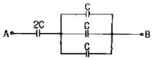
- 1C
- 1.2C
- 2C
- 2.4C
(정답률: 68%)
8. e = 141 sin(120πt-π/3)인 파형의 주파수는 몇 [Hz]인가?
- 120
- 60
- 30
- 15
(정답률: 76%)
9. 5[Wh]는 몇 [J]인가?
- 720
- 1800
- 7200
- 18000
(정답률: 81%)
10. 저항 3[Ω], 유도리액턴스 4[Ω]의 직렬회로에 교류 100[V]를 가할 때 흐르는 전류와 위상각은 얼마인가?
- 14.3[A], 37°
- 14.3[A], 53°
- 20[A], 37°
- 20[A], 53°
(정답률: 39%)
11. 그림을 테브닝 등가회로로 고칠 때 개방전압 V와 저항 R은?
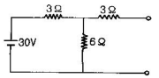
- 20[V], 5[Ω]
- 30[V], 8[Ω]
- 15[V], 12[Ω]
- 10[V], 1.2[Ω]
(정답률: 43%)
12. 전압 220[V] 1상 부하 Z = 8+6jΩ의 △회로의 선전류는 몇 [A]인가?
- 22
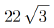
- 11
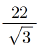
(정답률: 69%)
13. 줄(Joule)의 법칙에서 발열량 계산식을 옳게 표시한 것은?
- H = 0.24I2R
- H = 0.024I2Rt
- H = 0.024I2R2
- H = 0.24I2Rt
(정답률: 72%)
14. 200[V]에서 1[kW]의 전력을 소비하는 전열기를 100[V]에서 사용하면 소비전력은 몇 [W]인가?
- 150
- 250
- 400
- 1000
(정답률: 51%)
15. 질산은을 전기분해할 때 직류 전류를 10시간 흘렸더니 음극에 120.7[g]의 은이 부착하였다. 이때의 전류는 약 몇 [A]인가?(단. 은의 전기화학 당량 K=0.001118[g/c)이다.)
- 1
- 2
- 3
- 4
(정답률: 46%)
16. 0.02[㎌]의 콘덴서에 12[μC]의 전하를 공급하면 몇 [V]의 전위차를 나타내는가?
- 600
- 900
- 1200
- 2400
(정답률: 59%)
17. 주기적인 구형파 신호의 성분은 어떻게 되는가?
- 성분 분석이 불가능하다.
- 직류분만으로 합성된다.
- 무수히 많은 주파수의 합성이다.
- 교류 합성을 갖지 않는다.
(정답률: 63%)
18. 최대값 10[A]인 교류 전류의 평균값은 약 몇 [A]인가?
- 3.34
- 4.33
- 5.65
- 6.37
(정답률: 62%)
19. 자기력선의 설명 중 맞는 것은?
- 자기력선은 자석의 N극에서 시작하여 S극에서 끝난다.
- 자기력선은 상호간에 교차한다.
- 자기력선은 자석의 S극에서 시작하여 N극에서 끝난다.
- 자기력선은 가시적으로 보인다.
(정답률: 69%)
20. 전하의 성질을 잘못 설명한 것은?
- 같은 종류의 전하는 흡인하고 다른 종류의 전하끼리는 반발한다.
- 대전체에 들어 있는 전하를 없애려면 접지시킨다.
- 대전체의 영향으로 비대전체에 전기가 유도 된다.
- 전하는 가장 안정한 상태를 유지하려는 성질이 있다.
(정답률: 76%)
2과목: 전기 기기
21. 변압기유로 쓰이는 절연유에 요구되는 성질이 아닌 것은?
- 점도가 클 것
- 비열이 커 냉각 효과가 클 것
- 절연재료 및 금속재료의 화학작용을 일으키지 않을 것
- 인화점이 높고 응고점이 낮을 것
(정답률: 66%)
22. 다음 중 변압기의 온도 상승 시험법으로 가장 널리 사용되는 것은?
- 단락시험
- 극성시험
- 절연내력시험
- 무부하시험
(정답률: 47%)
23. 4극의 3상 유도 전동기가 60[Hz]의 전원에 연결되어 4[%]의 슬립으로 회전할 때 회전수는 몇 [rpm]인가?
- 1656
- 1700
- 1728
- 1880
(정답률: 74%)
24. 4극 24홈 표준 농형 3상 유도 전동기의 매극 매상당의 홈수는?
- 6
- 3
- 2
- 1
(정답률: 51%)
25. 6극 60[Hz] 3상 유도 전동기의 동기속도는 몇 [rpm]인가?
- 200
- 750
- 1200
- 1800
(정답률: 67%)
26. 다음 중 농형 유도 전동기의 기동법이 아닌 것은?
- Y-△ 기동법
- 리액터 기동법
- 2차 저항법
- 기동 보상법
(정답률: 69%)
27. 동기 발전기의 돌발 단락전류를 주로 제한하는 것은?
- 누설 리액터
- 역상 리액터
- 동기 리액터
- 권선저항
(정답률: 63%)
28. 단락비가 큰 동기기는?
- 안정도가 높다.
- 기계가 소형이다.
- 전압 변동률이 크다.
- 전기자반작용이 크다.
(정답률: 59%)
29. 직류 발전기의 부하 포화 곡선은 다음 어느 것의 관계인가?
- 부하 전류와 여자 전류
- 단자 전압과 부하 전류
- 단자 전압과 계자 전류
- 부하 전류와 유기기전력
(정답률: 52%)
30. 플레밍(Fleming)의 오른손 법칙에 따르는 기전력이 발생하는 기기는?
- 교류발전기
- 교류전동기
- 교류정류기
- 교류용접기
(정답률: 77%)
31. 유입 변압기에 기름을 사용하는 목적이 아닌 것은?
- 열 방산을 좋게 하기 위하여
- 냉각을 좋게 하기 위하여
- 절연을 좋게 하기 위하여
- 효율을 좋게 하기 위하여
(정답률: 36%)
32. 다음 중 SCR 기호는?
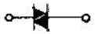
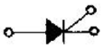
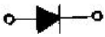
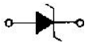
(정답률: 63%)
33. 계기용 변압기의 2차측 단자에 접속하여야 할 것은?
- O.C.R
- 전압계
- 전류계
- 전열부하
(정답률: 55%)
34. 보극이 없는 직류기의 운전 중 중성점의 위치가 변하지 않는 경우는?
- 무부하일 때
- 전부하일 때
- 중부하일 때
- 과부하일 때
(정답률: 79%)
35. 다음 그림의 전동기는 어떤 전동기인가?
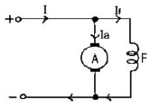
- 직권 전동기
- 타여자 전동기
- 분권 전동기
- 복권 전동기
(정답률: 60%)
36. 직류 전동기의 속도 제어법에서 정출력 제어에 속하는 것은?
- 계자 제어법
- 전기자 저항 제어법
- 전압 제어법
- 워드 레오나드 제어법
(정답률: 40%)
37. 60[Hz] 3상 반파 정류 회로의 맥동 주파수 [Hz]는?
- 360
- 180
- 120
- 60
(정답률: 66%)
38. 다음 중 토크(회전력)의 단위는?
- [rpm]
- [W]
- [Nㆍm]
- [N]
(정답률: 59%)
39. 동기 발전기의 병렬 운전에 필요한 조건이 아닌 것은?
- 기전력의 크기가 같을 것
- 기전력의 위상차가 최대가 될 것
- 기전력의 주파수가 같을 것
- 기전력의 파형이 같을 것
(정답률: 66%)
40. 다음 중 자기 소호 제어용 소자는?
- SCR
- TRIAC
- DIAC
- GTO
(정답률: 61%)
3과목: 전기 설비
41. 다음과 같은 그림기호의 명칭은? (그림이 흐립니다. 근데 원본이 저렇게 생겼습니다. 감안하셔서 문제 푸기 바랍니다.)
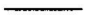
- 천장은폐배선
- 노출배선
- 지중매설배선
- 바닥은폐배선
(정답률: 75%)
42. 1종 금속몰드 배선공사를 할 때 동일 몰드내에 넣는 전선은 최대 몇 본 이하로 하여야 하는가?
- 3
- 5
- 10
- 12
(정답률: 39%)
43. 가공 인입선 중 수용장소의 인입선에서 분기하여 다른 수용자소의 인입구에 이르는 전선을 무엇이라 하는가?
- 소주인입선
- 연접인입선
- 본주인입선
- 인입간선
(정답률: 76%)
44. 변전소에 사용되는 주요 기기로서 ABB는 무엇을 의미 하는가?
- 유입차단기
- 자기차단기
- 공기차단기
- 진공차단기
(정답률: 61%)
45. 수ㆍ변전 시설의 인입구 개폐기로 많이 사용되고 있으며 전력 퓨즈의 용단시 결상을 방지하는 목적으로 사용되는 개폐기는?
- 부하 개폐기
- 선로 개폐기
- 자동 고장 구분 개폐기
- 기중부하 개폐기
(정답률: 36%)
46.
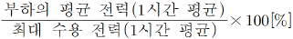
의 관계를 가지고 있는 것은?- 부하율
- 부등률
- 수용률
- 설비율
(정답률: 48%)
47. 주상변압기 설치시 사용하는 것은?
- 완금밴드
- 행거밴드
- 지선밴드
- 암타이밴드
(정답률: 58%)
48. 옥내배선의 박스(접속함) 내에서 가는 전선을 접속할 때 주로 어떤 방법을 사용하는가?
- 쥐꼬리접속
- 슬리브접속
- 트위스트접속
- 브리타니아접속
(정답률: 73%)
49. 건축물의 종류에서 표준부하를 20[VA/m2]으로 하여야 하는 건축문은 다음 중 어느 것인가?
- 교회, 극장
- 학교, 음식점
- 은행, 상점
- 아파트, 미용원
(정답률: 60%)
50. 폭발성 분진이 존재하는 곳의 금속관 공사에 있어서 관 상호 및 관과 박스 기타의 부속품이 풀박스 또는 전기기계기구와의 접속은 몇 턱 이상의 나사 조임으로 접속 하여야 하는가?
- 2턱
- 3턱
- 4턱
- 5턱
(정답률: 75%)
51. 저압 옥내 간선에 사용되는 전선에 관한 사항이다. 간선에 접속하는 전동기 등의 정격전류의 합계가 50[A]를 초과하는 경우에 그 정격전류의 합계의 몇 배의 허용전류가 있는 전선 이어야 하는가?
- 0.8
- 1.1
- 1.25
- 3.0
(정답률: 65%)
52. 1종 가요 전선관을 구부릴 경우의 곡률 반지름은 관 안 지름의 몇 배 이상으로 하여야 하는가?
- 3
- 4
- 5
- 6
(정답률: 70%)
53. 성냥, 석유류, 셀룰로이드 등 기타 가연성 물질을 제조 또는 저장하는 장소의 배선 방법으로 적당하지 않은 공사는?
- 케이블배선 공사
- 방습형 플렉시블배선 공사
- 합성수지관배선 공사
- 금속관배선 공사
(정답률: 65%)
54. 2종 금속 몰드의 구성 부품에서 조인트 금속 부품이 아닌 것은?
- 노멀밴드형
- L형
- T형
- 크로스형
(정답률: 44%)
55. 가스 절연 개폐기나 가스 차단기에 사용되는 가스인 SF6의 성질이 아닌 것은?
- 연소하지 않는 성질이다.
- 색깔, 독성, 냄새가 없다.
- 절연유의 1/140로 가볍지만 공기보다 5배 무겁다.
- 공기의 25배 정도로 전연 내력이 낮다.
(정답률: 62%)
56. 금속관 공사에서 금속 전선관의 나사를 낼 때 사용하는 공구는?
- 밴더
- 커플링
- 로크너트
- 오스터
(정답률: 74%)
57. 철근 콘트리트주의 길이가 14[m]이고, 설계하중이 9.8[kN]이하 일 때, 땅에 묻히는 표준깊이는 몇 [m]이어야 하는가?
- 2[m]
- 2.3[m]
- 2.5[m]
- 2.7[m]
(정답률: 24%)
58. 합성수지관을 새들 등으로 지지하는 경우에는 그 지지 점간의 거리를 몇 [m] 이하로 하여야 하는가?
- 1.5[m] 이하
- 2.0[m] 이하
- 2.5[m] 이하
- 3.0[m] 이하
(정답률: 55%)
59. 다음 중 동전선의 접속에서 직선 접속에 해당하는 것은?
- 직선맞대기용슬리브(B형)에 의한 압착 접속
- 비틀어 꽂는형의 전선접속기에 의한 접속
- 종단겹침용슬리브(E형)에 의한 접속
- 동선압착단자에 의한 접속
(정답률: 45%)
60. 교류 400[V] 미만의 저압용 기계기구의 철대 및 금속제 외함의 접지공사는?(관련 규정 개정전 문제로 여기서는 기존 정답인 3번을 누르면 정답 처리됩니다. 자세한 내용은 해설을 참고하세요.)
- 제1종 접지공사
- 제2종 접지공사
- 제3종 접지공사
- 특별 제3종 접지공사
(정답률: 75%)